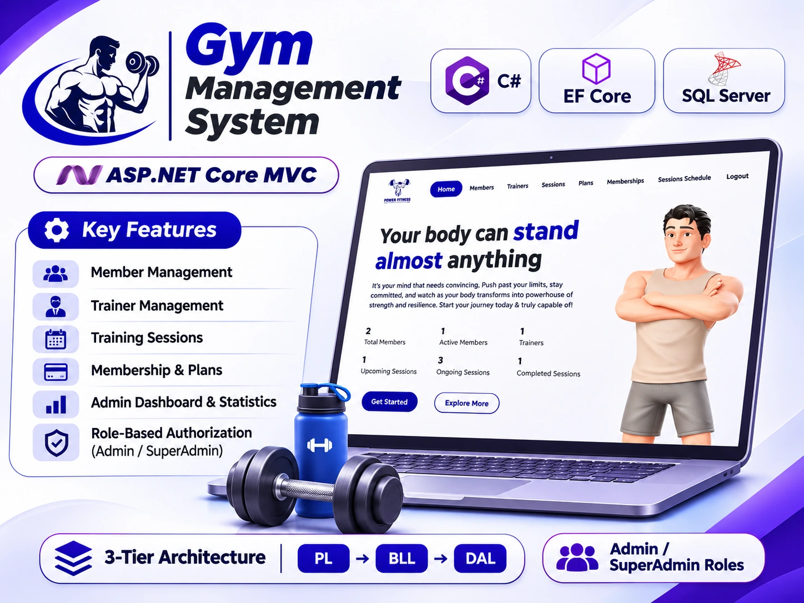
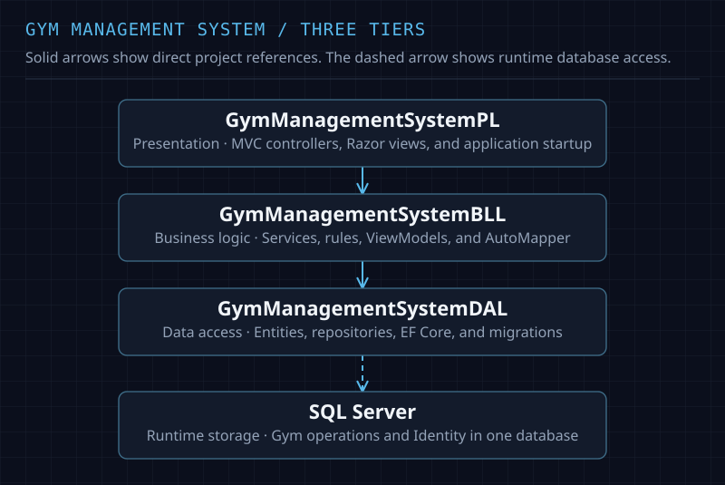
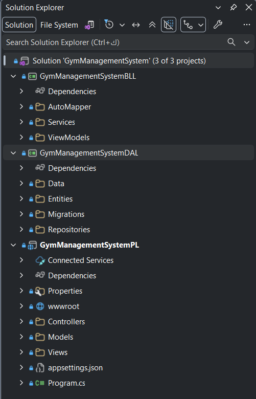
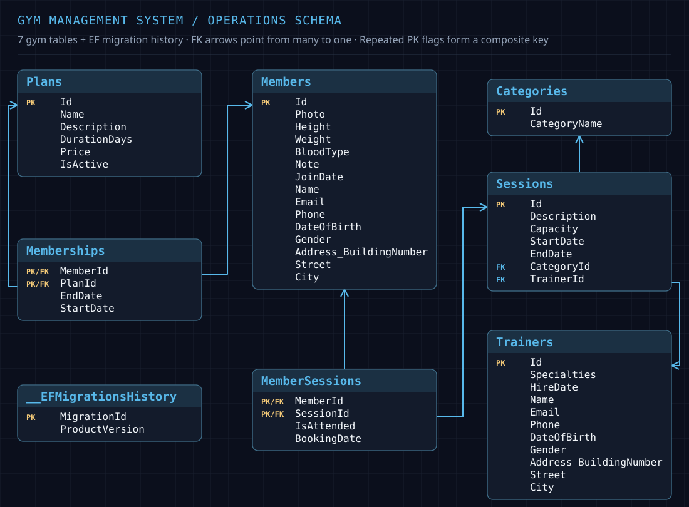
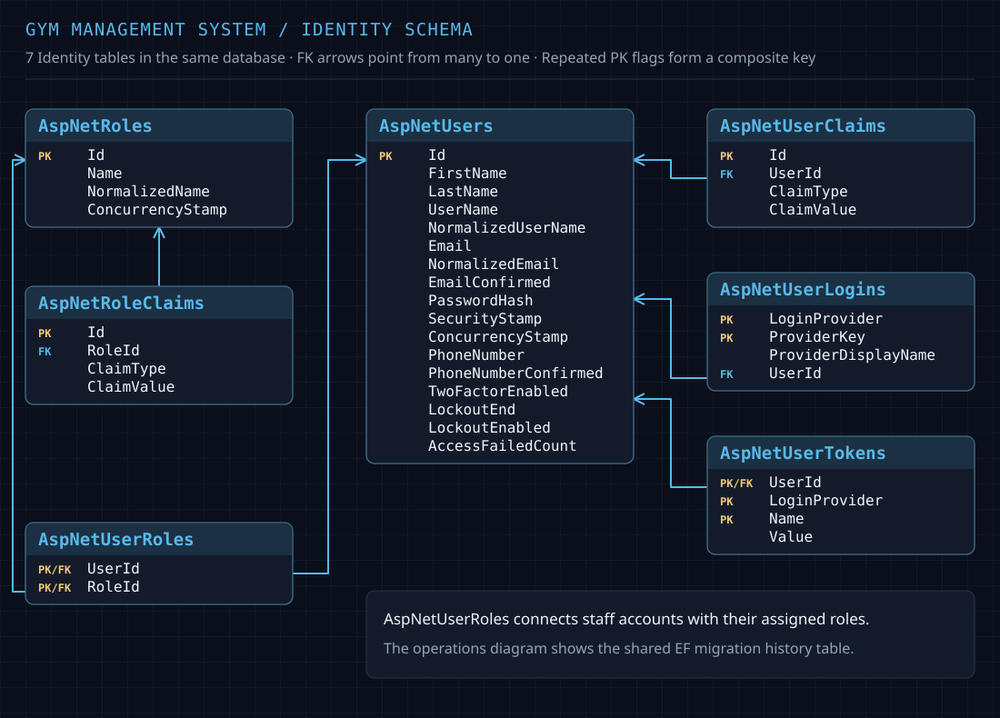
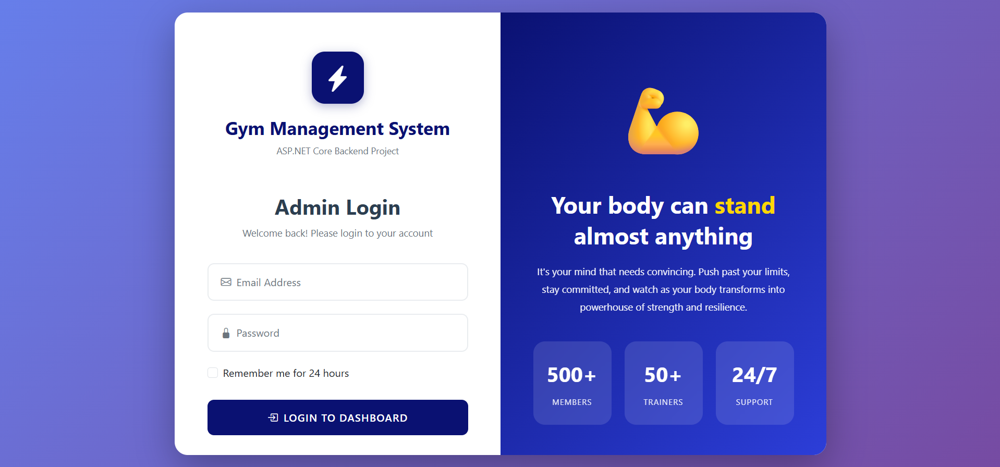
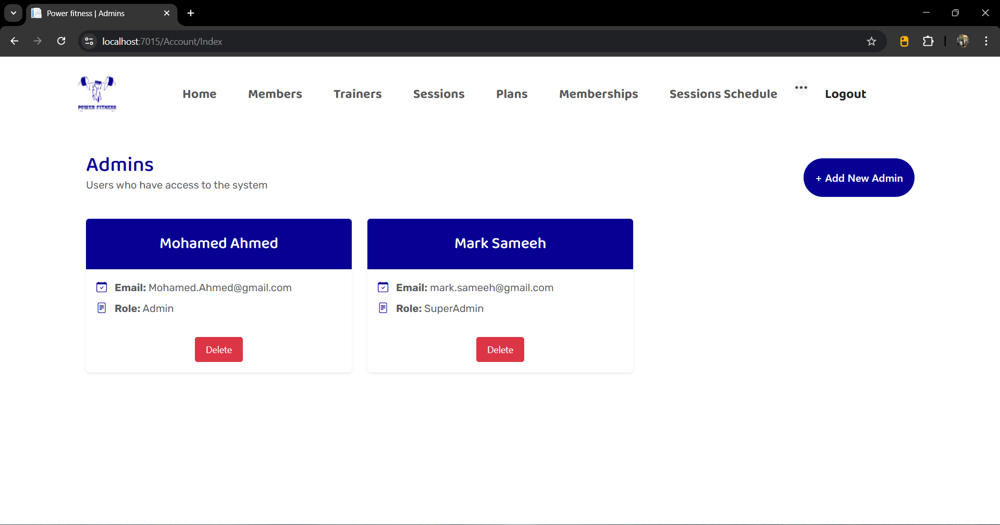
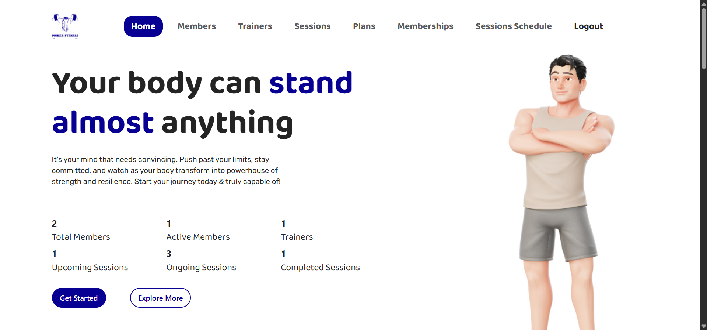
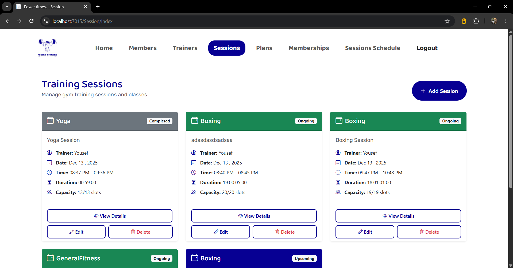

PROJECT / 04
Gym Management System.
MVC Web Application
A three-tier ASP.NET Core MVC application for managing gym members, trainers, memberships, session scheduling, bookings, and staff access.

- 3 Solution Projects
- 15 SQL Server Tables
- 2 Administrative Roles
- .NET 9 Target Framework
The single database contains seven gym tables, seven Identity tables, and one EF migration history table.
Project overview
Gym operations
Gym staff maintain member and trainer profiles, assign members to membership plans, and schedule sessions by category and trainer. The application tracks bookings, attendance, and current membership status.
Staff administration
Staff work in a server-rendered MVC interface with operational totals and protected management screens. SuperAdmin accounts also manage staff logins and assign administrative roles.
Technology stack
Project demonstration
The walkthrough shows staff sign-in, member and trainer management, session scheduling, bookings, memberships, and administrative screens with fictional test data.
System architecture
Three .NET 9 projects separate HTTP handling, business rules, and storage. The solid arrows follow the direct references in the project files. The dashed arrow shows database access at runtime.




- Presentation layer
GymManagementSystemPLhandles MVC routing, model binding, controller actions, and Razor views. Its startup configures dependency injection, Identity, and the SQL Server provider.- Business logic layer
GymManagementSystemBLLdefines ViewModels, service interfaces and implementations, business rules, and AutoMapper profiles.- Data access layer
GymManagementSystemDALcontains entities, the EF Core context, entity mappings, repositories, migrations, and seed code.
Runtime request flow
Routing sends browser requests to MVC controllers. An injected business service can query or update data through a repository and EF Core. The controller then renders a Razor view or redirects the browser.
Sources Presentation project · Business project · Data access project
Database design
The gym data and ASP.NET Core Identity data share one SQL Server database and one EF Core context. The diagrams show the physical tables and foreign keys from the migrations.
Gym operations
Memberships join members to plans. MemberSessions join members to sessions and store booking dates and attendance. Both junction tables use two-column primary keys. Each session has one trainer and one category. HealthRecord shares the Members table, and addresses are stored as columns in Members and Trainers.


Identity and access
ASP.NET Core Identity stores staff accounts in AspNetUsers and role assignments in AspNetUserRoles. Claims, external-login keys, and user token records have their own Identity tables. Gym members are modelled separately from staff logins.


Sources EF Core model snapshot · Health record mapping
Core features
-
Member profiles
Create and update member profiles, view health details, and check upcoming bookings before deleting a member.
-
Trainer management
Maintain trainer contact details and specialties. Trainers assigned to future sessions cannot be deleted.
-
Session scheduling
Set a trainer, category, time window, and capacity. Future sessions can be edited while they have no bookings.
-
Bookings and attendance
Book eligible members into upcoming sessions, cancel future bookings, and mark attendance.
-
Memberships and plans
Enroll members in time-limited plans, view subscriptions, and edit or toggle plans subject to active memberships.
-
Health information
Store height, weight, blood type, and notes alongside the member record.
-
Operational dashboard
Summarize members, trainers, active memberships, and upcoming, ongoing, and completed sessions.
-
Role-based administration
Sign in with ASP.NET Core Identity. SuperAdmin accounts can list, create, and delete administrative accounts.
Business logic and validation
- Membership validity
- The service checks that the member and plan exist and rejects a new membership when the member already has an active one. Expiration is calculated from the plan duration. Active memberships also govern whether a plan can be edited or toggled.
- Scheduling and capacity
- A session requires an existing trainer and category, an end time after its start, and capacity between 1 and 25. Edits are limited to future sessions with no bookings. Deletion is rejected when a session is underway or has bookings.
- Booking eligibility
- The service requires a future session, an active membership, and a remaining place. The composite key prevents duplicate member–session rows at the database level. Cancellation is limited to future sessions.
- Validation and deletion
- MVC actions inspect model validation results. Services check for duplicate member and trainer email addresses and phone numbers, backed by unique indexes. Upcoming bookings block member deletion and future assigned sessions block trainer deletion.
Sources Membership service · Session service · Booking service · Booking key mapping
Authentication and authorization
Staff sign-in
ASP.NET Core Identity authenticates staff with email and password and maintains a cookie-based session. The sign-in form offers a remember-me option, and staff can sign out from the application.


Administrative permissions
Startup seeds the Admin and SuperAdmin roles and their initial accounts. Operational controllers require an authenticated user. Account listing, creation, and deletion are restricted to SuperAdmin. SuperAdmin can assign an administrative role when creating a staff account.


Sources Account controller · Application startup
Application interface
Dashboard
The dashboard counts members, trainers, and active memberships. It groups sessions as upcoming, ongoing, or completed based on their scheduled times. The capture shows a local example dataset.


Session management
Staff can view scheduled sessions and inspect their category, trainer, time, and capacity. The MVC views expose edit and delete actions, with the service applying scheduling and booking restrictions.


Sources Analytics service · Session controller
Design practices and technical decisions
- Service layer and dependency injection
- Controller constructors receive service interfaces. The business layer handles eligibility and scheduling decisions independently of Razor rendering, and startup supplies the implementations.
- Repository and Unit of Work
- A generic EF Core repository handles common persistence operations. Specialized repositories handle session, booking, membership, and plan queries. The Unit of Work coordinates repositories and commits through the shared context.
- ViewModels and AutoMapper
- The business layer defines ViewModels for forms and views. AutoMapper profiles translate between these models and entities, keeping database details out of the views.
- Explicit persistence mapping
- Fluent configurations define composite keys, required relationships, and SQL constraints. The shared Members table keeps health fields with the member, while booking and membership rows carry their own dates and status information.
Sources Generic repository · Mapping profiles · Session configuration
Local verification and maintenance
Runtime evidence
The supplied local verification recorded a SQL Server connection update, EF Core migration, successful Release build, and MVC startup. On startup, the application also seeds plans and categories from JSON when those tables are empty. The earlier screenshots and demonstration capture individual workflows. The startup check covers the application launch.
Dependency maintenance
The maintenance revision upgraded AutoMapper from 15.0.1 to 15.1.4 and removed Microsoft.VisualStudio.Web.CodeGeneration.Design. The supplied audit reported that the known transitive findings in Microsoft.Build, NuGet.Packaging, and NuGet.Protocol cleared across all three projects. The Release build recorded 0 errors and 38 warnings.
Audit command
dotnet list package --vulnerable --include-transitive
The result reflects the advisory sources available during that maintenance session. Compiler, nullable-reference, and MVC warnings remained.